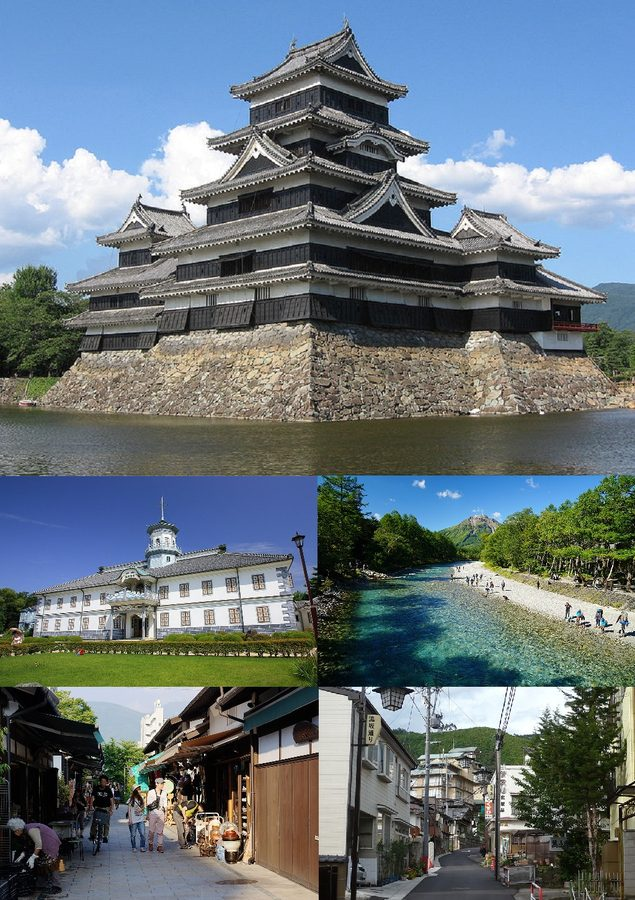
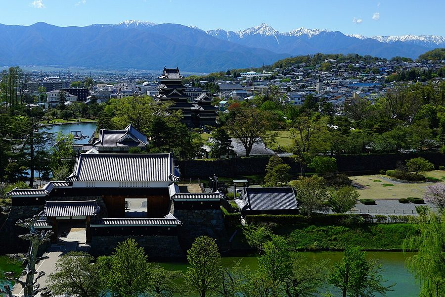
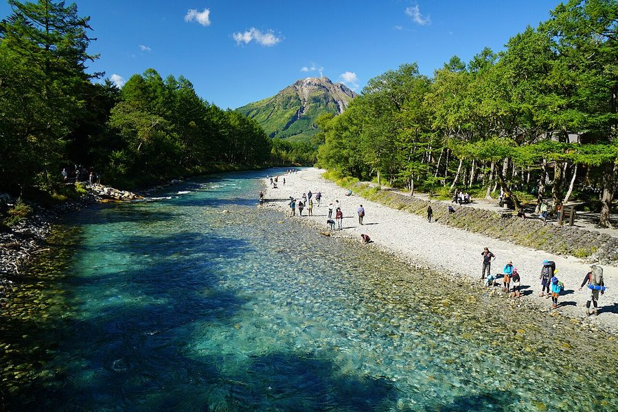

長野県松本市のソフトクリーム・ジェラート・かき氷（21件）
寄り道スポット検索アプリ「ヨッテコ」の収録データから、長野県松本市のソフトクリーム・ジェラート・かき氷を営業時間・料金つきで一覧にしました（2026年8月時点）。
最も遅くまで開いているのはアイスは別腹松本店（24:00まで）。
長野県松本市はどんなまち？
数字で見る🔍長野県松本市
まちの横顔



- 地形と気候: 市の西側には飛騨山脈（北アルプス）が広がり、上高地など県を代表する景勝地を抱えています。気候は気温の年較差・日較差が大きい顕著な大陸性気候で、降雪量が多く、旧・安曇村は豪雪地帯に指定されています。
- 観光: 国宝松本城を中心とする松本藩の旧城下町で、城下町には松本城の外堀に沿って善光寺街道が通り、千国街道や野麦街道が分岐する交通の要衝でした。東側の里山辺を越えるとワイナリーや温泉街などの観光地が広がり、美ヶ原高原へと続きます。国際会議観光都市に指定されています。
- 学問と文化: キャッチフレーズは「文化香るアルプスの城下町」「三ガク都（楽都・岳都・学都）」。県内唯一の国立大学である信州大学の本部が置かれ、小澤征爾ら音楽家が集うセイジ・オザワ 松本フェスティバルが開かれるほか、全国に広がるスズキ・メソードや花いっぱい運動の発祥地でもあります。国宝の旧開智学校など歴史的建造物も残ります。
寄り道充実度（全国偏差値）
偏差値・順位は、ヨッテコ収録データ（2026年8月時点・26,033件）を市区町村別に集計した施設数の全国分布（1,728市区町村）から毎回算出しています。カードを押すとカテゴリ別の分析に切り替わります。
アイスから見た長野県松本市
市内のアイスのお店は21件、全国36位タイ（上位2.1%）。——アイスの選択肢は、全国でも上位クラス。
- かき氷を出す店は0%で、全国水準（16%）を下回ります。かき氷が目当てなら、店を絞って向かうことになりそうです。
- カップやコーンのアイスがある店は48%で、全国の39%を上回ります。国宝松本城を中心とする旧城下町で、国際会議観光都市に指定される市。持ち帰りやすい形のアイスが充実しているまち、と言えます。
- 24%の店がジェラートを扱います。全国水準は14%です。24%という数字は、ジェラートが例外ではないことを示しています。
出典: 施設データ=ヨッテコ収録データ（26,033件・2026年8月時点）。偏差値・全国順位・全国水準は全1,728市区町村の分布から毎回算出。 / 人口=総務省「住民基本台帳に基づく人口、人口動態及び世帯数」（2026年1月1日現在） / 面積=国土地理院「全国都道府県市区町村別面積調」（2026年4月1日時点） / 森林率=農林水産省「2025年農林業センサス（農山村地域調査）」市区町村別林野率（2025年、林野率（林野面積÷総土地面積）） / 年平均気温=気象庁「平年値（1991-2020年）」。市区町村の代表点（国土交通省「大字・町丁目レベル位置参照情報」）から最も近い観測点の値 / 地形・観光・文化=日本語版Wikipedia「松本市」（https://ja.wikipedia.org/wiki/松本市、2026年8月21日取得） / まちの解説=同記事より作成（CC BY-SA 4.0） / 写真=Wikimedia Commons（各キャプションに作者・ライセンスを記載）
曜日別の営業施設数
| 月 | 火 | 水 | 木 | 金 | 土 | 日 |
|---|---|---|---|---|---|---|
| 17 | 15 | 14 | 19 | 19 | 19 | 16 |
水曜日が最も休みが多く（各5件が定休）、年中無休は7件です。※営業時間データのある19件で集計
施設一覧
| 施設 | 営業時間 |
|---|---|
| Dolce ＆ Premium GelatoハレTerrace信州 松本店 ジェラートアイス | 11:00〜18:30 ※曜日により異なる |
| Glacerie TOIET ジェラート | 11:30〜20:00（水休） |
| Larch Bake and Gelato -ラーチベイクアンドジェラート- ジェラート | 11:00〜18:00 ※曜日により異なる |
| TADACHIYA cafe THE GATE ソフト 嘉永元年創業。見て・試して・相談できる体験型ビューティースペース。ソフトクリームも提供 | 11:00〜17:00（水休） |
| cafe SENRI（茜里） ソフト ロイヤルスウィートバニラソフトクリーム販売の直営店「Cafe SENRI」で提供。バニラソフト、徳川抹茶ソフト、アイスオ… | 10:00〜18:00（水・日休） |
| murayamaningyouten_ice_cream アイス | 12:00〜17:00（日休） |
| ほっとミルク（信州ミルクランド 売店） ソフト | 10:30〜17:00（水休） |
| アイスは別腹松本店 ソフトアイス | 13:00〜24:00 ※曜日により異なる |
| カワノホトリcafe ソフト | 11:30〜18:00 ※曜日により異なる |
| ジェラテリア チャオ ジェラートアイス チャオのジェラートは100%天然素材を使用。作りたての19種類のアイスクリームを毎日、旬の食材よりお作り致す。併設された… | 11:00〜19:00（火休） |
| ソフトクリームショップViva ソフトアイス | 10:00〜17:00（月休） |
| マウント デザート アイランド アイスクリーム 松本 アイス 2006年創業のクラフトアイスクリーム店。長野県大町市の松田乳業牛乳と生クリームをベースに、常時20種類以上のフレーバー… | 10:00〜21:00 ※曜日により異なる |
| 上高地ソフトクリーム ソフトアイス 五千尺ホテル上高地と徳澤園が提供するソフトクリーム。河童橋と穂高連峰を仰ぎ見る立地。バスターミナルの売店では山賊焼きも好… | 08:00〜17:00 |
| 信州アルプス市場 ソフト | 10:00〜20:00 |
| 信州プリン工房 ソフト 安曇野産牛乳を使ったソフトクリームを提供。松本城から徒歩5分の立地。 | 10:00〜17:00 |
| 信州ミルクランド あづみ野工場 ソフトアイス | — |
| 富成伍郎商店 ソフト 昭和2年創業、松本の名水を使う老舗豆腐店。豆乳を使ったソフトクリーム（300円）やおからドーナツなど豆腐屋ならではのスイ… | 09:00〜18:00（日休） |
| 森のカフェ ソフト | — |
| 森の隠れ家 アイス | 12:00〜17:00（火休） |
| 田七屋 松本中町通り店 ジェラートアイス | 10:00〜17:00（火・水休） |
| 開運堂 本店 ソフト 信州の老舗が開運堂本店内で提供。1998年世界初の自動盛り付けロボットが日替わりメニューのソフトクリームを制作。小豆テー… | 09:00〜18:00 |